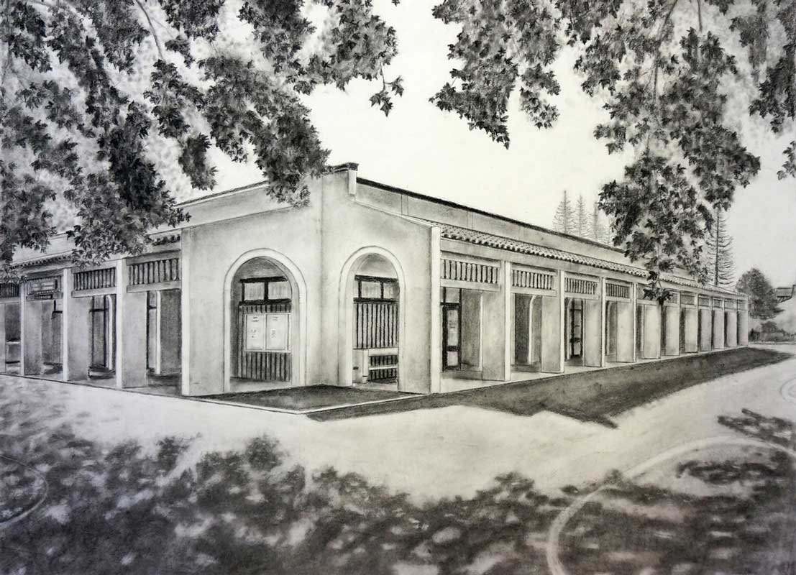
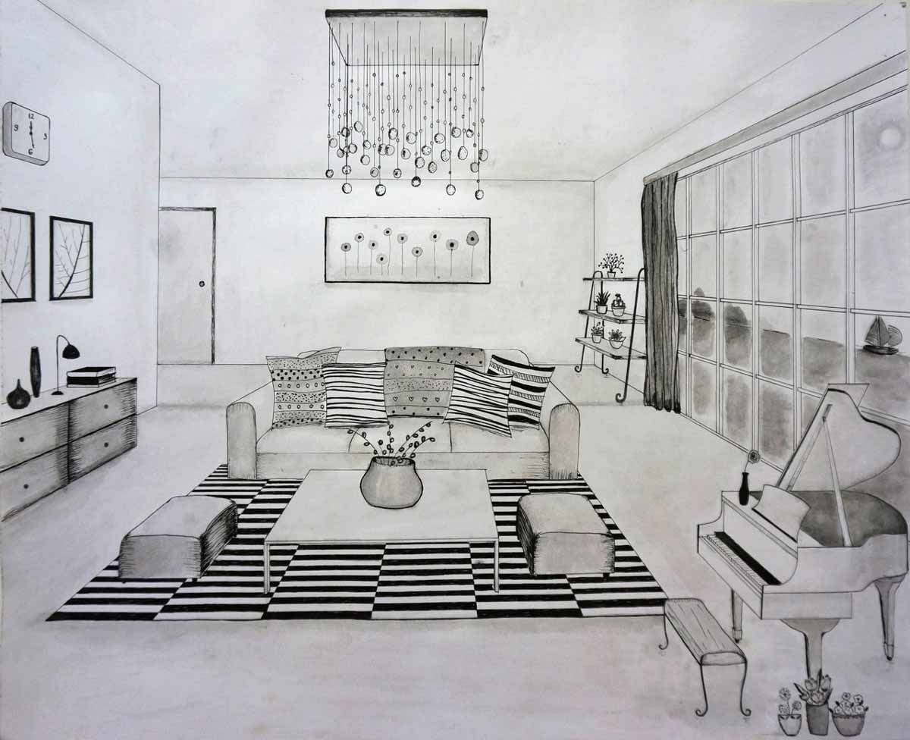
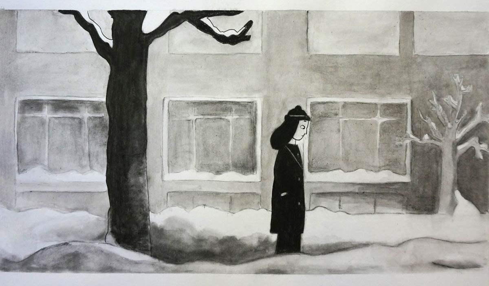
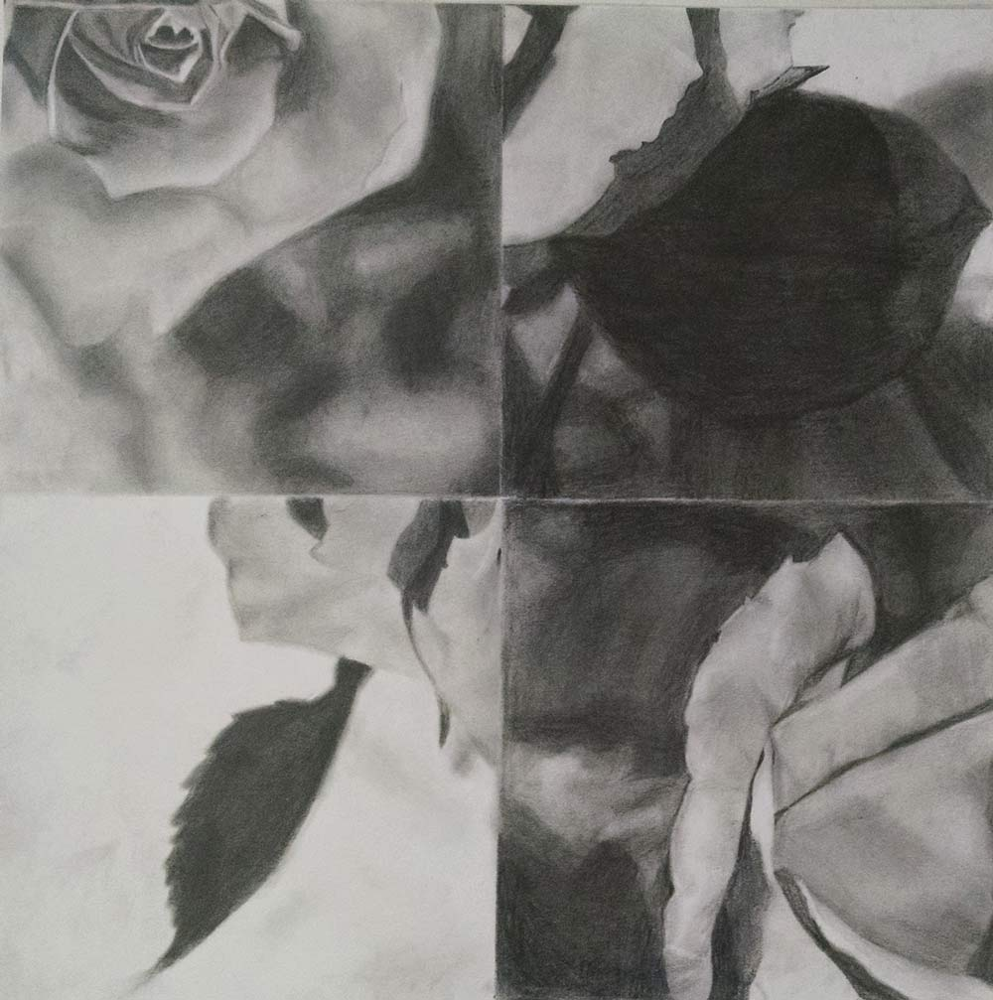

1
Medium: Charcoal on Drawing paper (18'' x 24'')
I used charcoal in this drawing. Working with charcoal became harder when it comes to fine lines and details of the building, but I love the true black of charcoal, which is perfect for me to demonstrate the leaf silhouette against the sky as well as the large shadow area on the ground. The trees and their shade bring great charm to the landscape and lead viewer's attention to the focal point of the work, which is the building. Far away are some pine trees and shrubs. This composition together helps create space and depth for the work.
2
Medium: Pen and Ink on Bristol Paper (14''x17'')
I had fun adding this and that to "The room" to turn this one-point perspective drawing into the room of my dream.
3
Medium: charcoal and ink on Bristol paper (14''x17'')
I reproduced this still from the movie Persepolis, 2007, an animation based on the graphic novel by Marjane Satrapi. In this film still, the main character, Marjane was going through a difficult time of homesick and loneliness in Austria. While Christmas was around the corner and her friends already had holiday plans with their family, Marjane was all alone. I chose to draw this film still not only because it was visually compelling but also because it was touching to me.
4
Medium: Graphite on paper (14''x14'')
This drawing evokes the nostalgia of my first Spring in California. When it was Spring, I enjoyed taking pictures of flowers and this was a rose in my neighborhood. I printed the photo, cut it up into four equal pieces, then rearranged pieces to create an interesting composition with contrast. Then, I produced this drawing in graphite.